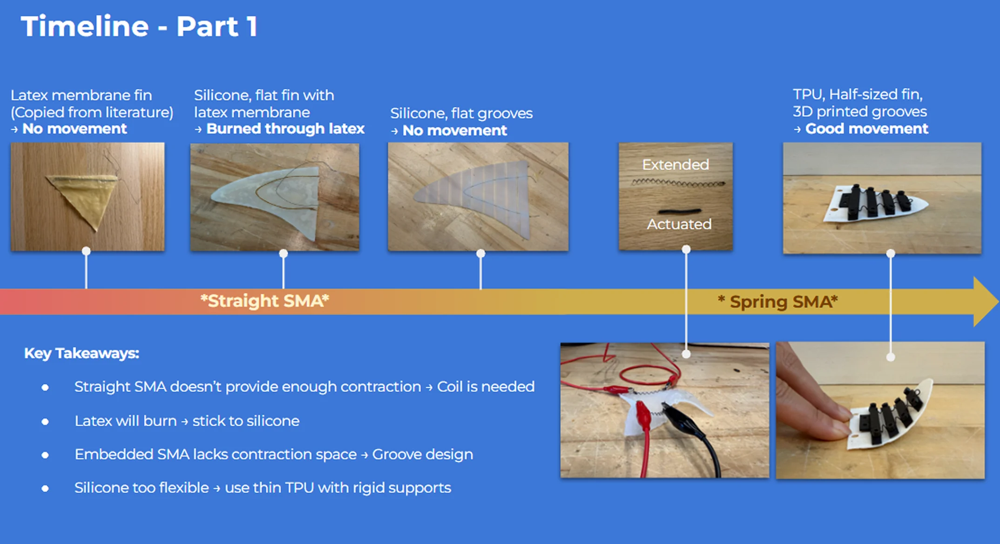
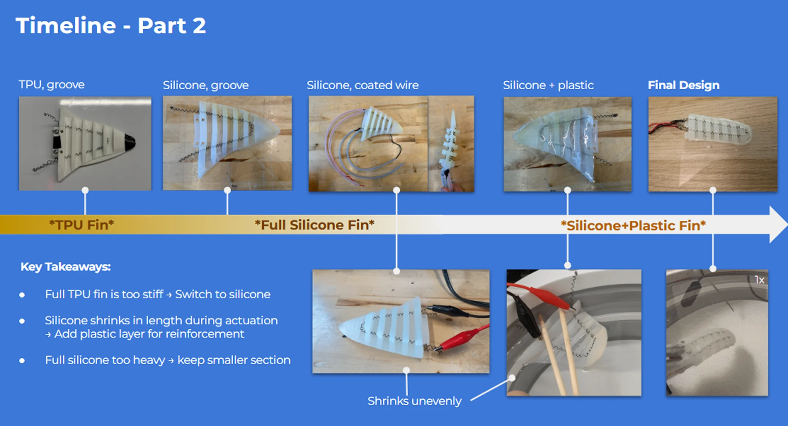

Soft Robotic Manta Ray Fin
A low-cost soft robotic proof of concept.
Carnegie Mellon University · Oct ~ Dec 2025 · Team of 4
Skills
The project
Coral reefs are some of the most fragile ecosystems on the planet, but current propeller-driven underwater robots can kick up sediment or damage the very things they’re meant to monitor. To tackle this, we looked to nature and created a soft robot that uses a gentle manta ray’s motion for propulsion.
We demonstrated a proof of concept, with manufacturing documentation, for manta ray–inspired fins driven by shape memory alloy (SMA) wires, which contract when heated. The fins propelled the robot with minimal dispersion at a fraction of the cost of commercial robots.

What I did & learned
1) Hydrostatic fin design: adapting from nature
I designed new fin mechanisms that combine soft materials with SMA wires to better capture swim strokes. I initially tried to mimic a real fin’s geometry as closely as possible in silicone, but I found that the material (silicone 95A) was 1) too heavy for the SMA wires and 2) caused buckling and unnecessary drag in the later half of the stroke as the SMA wire over-contracted. Instead, I adapted skeletal structures and used FEA to optimize the design, with a leading edge of harder silicone and a light, flexible plastic sheet in between. This helped mitigate buckling and created a smooth stroke, improving propulsion efficiency by 15%.
2) SMA efficiency
We went with SMA wires because they mimic biological muscles, contracting as they heat up. Since the robot works underwater, we thought the water would help the wires cool down to reset after each stroke. However, testing showed that water contact required a lot more current input. We tried numerous strategies, from a thin hydrophobic coating to, eventually, enclosing the wires in silicone molds. I designed multi-stage molds to achieve a thin waterproof layer without complicating the molding process.
all projects